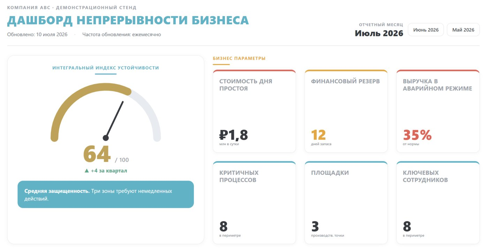

Sound familiar?
Three situations that usually start the conversation about a dashboard.
- “Are we ready for a major disruption?”The board of directors asks, and you have nothing to answer with: there is a folder of plans, but no numbers.
- The BCM project ended, and the system died.A quarter after implementation the plans are out of date, no exercises are held, and nobody has noticed.
- You learn about problems from incidents.You see protection degrading only when something has already broken and is costing money.
The cost of not seeing
The cure for blindness is an instrument that shows the state of things at all times.
- RUB 1.8 million per day.A typical cost of one day of downtime for a mid-size business. Most companies have never calculated theirs.
- 40% never reopen.The share of small businesses that did not resume operations after a major disruption (FEMA).
- 26 hours instead of 4.Actual recovery time is often several times the target, and companies find this out during the outage.
Who needs it and when
It is especially timely if a tender or a regulator’s inspection is coming up, an incident has happened recently, the insurer is asking questions, or you have just invested in BCM and want the system to stay alive.
- CEO.See business resilience the same way you see revenue, without reading the plans.
- Board of directors.One screen with the real state of resilience.
- Risk manager and BCM system owner.A single picture of the whole system; arguments for the budget.
- Audit and counterparties.Prove your maturity in numbers to a bank, an exchange, a tender committee or an insurer.
What you will see on the dashboard
Six questions an executive asks, answered on one screen.
- How well protected are we?Resilience index 0-100 and its trend: one number for the conversation with the board.
- What will fail first?Critical processes with traffic lights: readiness, RTO/RPO, the people responsible.
- Where are the thin threads?Single points of failure: one person, one supplier, one server, one AI service.
- What does an hour of downtime cost?Financial exposure: the cost of downtime and the recovery cushion.
- Are the plans alive?BCP/DRP coverage, review dates, when exercises were held and what they showed.
- What has changed?Quarterly trends: where things have improved and where degradation has started.
What the dashboard looks like
This is the top of the working screen: the overall resilience index and the business parameters. Further down, the dashboard shows critical processes with traffic lights, single points of failure, the status of plans and quarterly trends.
Data for ABC, a fictional company.

First dashboard in two weeks
Three steps from the start to the first dashboard.
When you want more, we connect your systems directly (the Integration level), and the figures update without manual input.
- 01You receive an Excel workbook with the methodology insideOne sheet holds a form with pre-selected metrics, the second holds instructions: what, where from and how often. No need to spend months deciding “what to measure”.
- 02Your coordinator fills in the formAn ordinary employee, 1-2 hours. If there is no data yet, we will help you collect the basics in an express assessment.
- 03The first dashboard is on your deskThe engine builds an HTML file: it opens in any browser and works without the internet. After that, it updates on schedule.
How the dashboard works
No complex IT system: the dashboard is a single HTML file built by a small Python engine.
The engine runs entirely inside your perimeter: on the coordinator’s laptop, a corporate server or a private cloud. Data never leaves the company: not a single figure goes outside.
- History and trends.On every rebuild the engine saves a dated snapshot in a lightweight embedded database (SQLite) next to itself. So the dashboard shows both the current state and the dynamics: what improved over the quarter and where degradation started.
How the dashboard differs from a BI report
Three differences that matter for a continuity system.
- Methodology inside.A BI team spends six months working out what to measure. Here the continuity metrics are already selected, defined and linked, so you can fill them in from day one.
- No IT project needed.The start needs no integrations, servers or procurement: Excel plus a lightweight engine inside your perimeter.
- It lives on after implementation.Regular updates and traffic lights keep the continuity system from quietly dying.
Product levels and pricing
The price depends on scale and level. We will discuss it at the demo, once we have matched the product to your business.
- 01Launch in 2 weeksStartExcel workbook with the methodology, the engine, setup for your structure, coordinator training, the first dashboard.
- 02Together with your IT teamIntegrationConnection to your data mart or systems (BI, ERP, ITSM): designing the data set, mapping, data quality rules. Most often no new data is needed: we help you use what you already have. Once connected, the figures update in real time.
- 03OptionMonthly serviceYou can run the dashboard entirely on your own or subscribe to the service. Then we collect the updates ourselves, rebuild the dashboard and send a short expert commentary: what has changed and what to watch.
We will show you the dashboard on an example from your industry
30 minutes online, no obligation: we walk through a live dashboard, fit the metrics to your business and tell you honestly whether it will work for you. Leave your name and work email, and we will reply within one working day.
Ready to discuss the project now? Mention it in the comment to your request, and we will start with the details.
Prefer messaging? Telegram · info@risk-place.ru
Frequently asked questions
Will the data leave the company?
No. The engine and the data stay entirely inside your perimeter: on your computer, server or private cloud.
We have no data for a dashboard. Where do we start?
With the Excel workbook: the methodology inside tells you what to collect. If there is no baseline data at all, we will collect it together in an express assessment, which is part of the Start level.
Who will update the data?
Your coordinator: 1-2 hours a month, following the instructions. Or subscribe to the monthly service, and we will take care of the updates.
How long until the first dashboard?
Usually 2 weeks from the start: setup, filling in the form, the first build and a review of the results.
Is this a certified monitoring system?
No. It is a management tool and a methodology. We say so honestly and make no inflated promises.